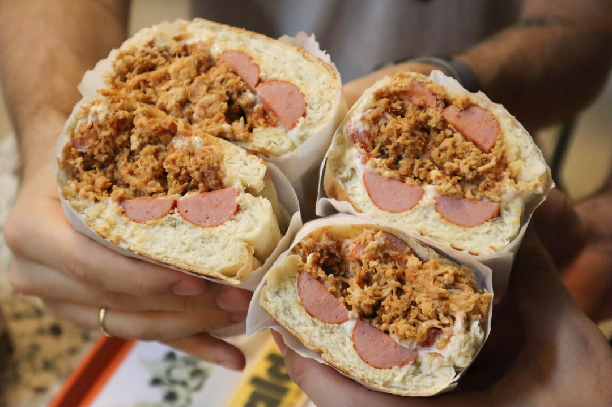
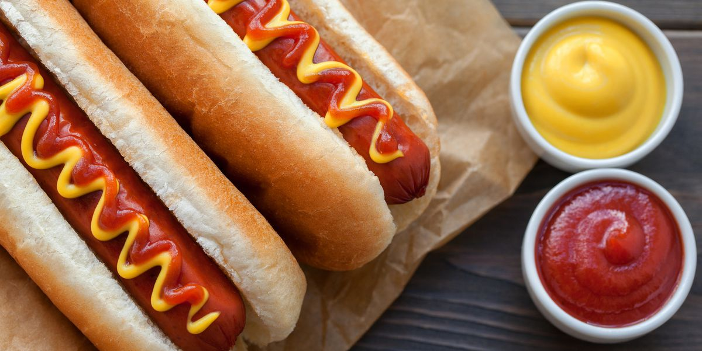

<!DOCTYPE html>

<html lang=" pt-br"></html>

<meta name="viewport" content="width=device-width, initial-scale=', maximum-scale=1.0">
        <meta charset="utf-8">
<body>

    <link rel="stylesheet" type="text/css" href="/css/style.css">
    

<title>
    Comida rápida de Florianopólis
</title>
<head>
 
<h1>Cuando hablamos de comida rápida, que es lo primero en que pensamos? </h1>

</head>

<p>Sí, exactamente pensamos en: hot dogs, pizzas, hamburguesas, papas fritas.
 Esto es porque a nivel mundial, estas son las comidas rápidas más comunes, en Florianopolis no seria diferente.   
 Más como en cualquier ciudad, región o país, esta isla tiene sus costumbres y adaptaciones de estas comidas rápidas, aquí te las voy a presentar.
</p>

<h2>Dog Tradicional, Dog Prensado y Hot Dog</h2>

<p>Aquí hare mención de los 2 tipos de hot dog que se encuentran en la isla de Florianopólis, sus variaciones e ingredientes desde los más simples, hasta los más locos y sin sentido.
 También mencionaré la referencia mundial del Hot Dog, sí el americano mismo.
</p>





<h4>Dog Tradicional</h4>
<p>Es un tipo de hot dog brasileño, el cual contiene: 
    pan tradicional (sí, este pancito que encontramos en todos lados), salchicha guisada, generalmente la pican pequeñita, papas fritas de bolsita, puede tener mayonesa y ketchup pero no es obligatorio.
    <div>Este tipo de Hot Dog es muy tipico de fiestas de cumpleaños, fiestas colegio, fiestas Juninas (tradicional Brasileña)</div>
</p>
<h4>Dog Prensado o Abierto</h4>
<p>Ahora bien el Dog <b>Prensado</b> o <b>Abierto</b>, es el que manda en las calles de Brasil, seria lo que llamamos "una bala fria" esa comida que encuentras a cualquier hora de la madrugada y en cualquier esquina.</p>
<p>Este Dog, puede tener hasta a tu suegra dentro asi que ojo con los ingredientes, puede haber alguno que parezca una locura dentro de un hot dog. 
Contiene: pan de hot dog, dos salchichas, guisantes verdes, maiz tierno, vinagreta (tomate, cebolla, pimenton), pure de batata, tocineta, queso rayado, mayonesa, ketchup, mostaza y la salsa casera del local. En algunas ciudades de Brasil es común que le coloquen huevo de cordoniz, carne molida, pollo esmechado, entre otras locuras.</p>
<div>Puede ser prensado (en una plancha meten el pan con todos los ingredientes y lo aplastan) o puede ser <b>Abierto</b>, en esta versión es mucho mas dificil comerselo porque hablamos de un pan que puede pesar hasta 800gr</div>
<h4>Hot Dog (americano)</h4>
<p>Este seria el hot dog conocido a nivel mundial, el que encuentras al ir al estadio de futbol, beisbol, cines, ferias de juegos, etc</p>
<div>Es bastante simple, contiene: pan de hot dog, una salchicha, ketchup y mostaza, algunas versiones pueden colocarle mayonesa. En lo personal, este es el hot dog que mas me gusta, el que me siento en confianza de comer en cualquier lugar
</div>
<p>
    <b>En conclusión</b> tenemos que existen muchas variaciones de cada comida, en cualquier parte del mundo, una puede ser más deliciosa que otra, pero sin duda todas marcan muy bien sus raices y tradiciones en cada plato.
</p>
</body>
<footer>
    <pre>
    ALLISON HOYOS
    FLORIANOPOLIS - SC. BRASIL 
    (48) 99912 9911</pre>
</footer>

